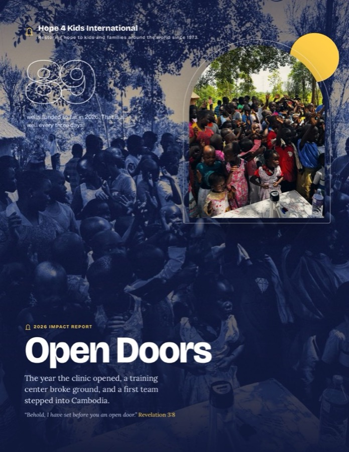
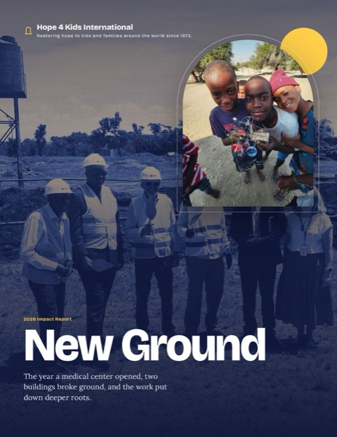
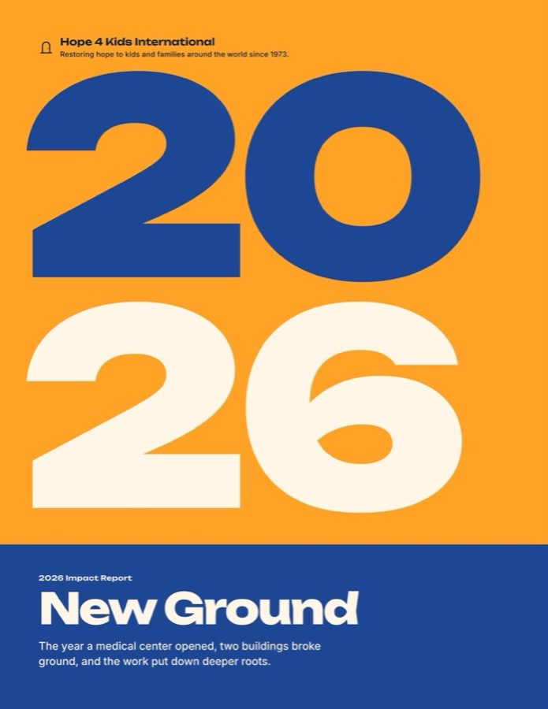
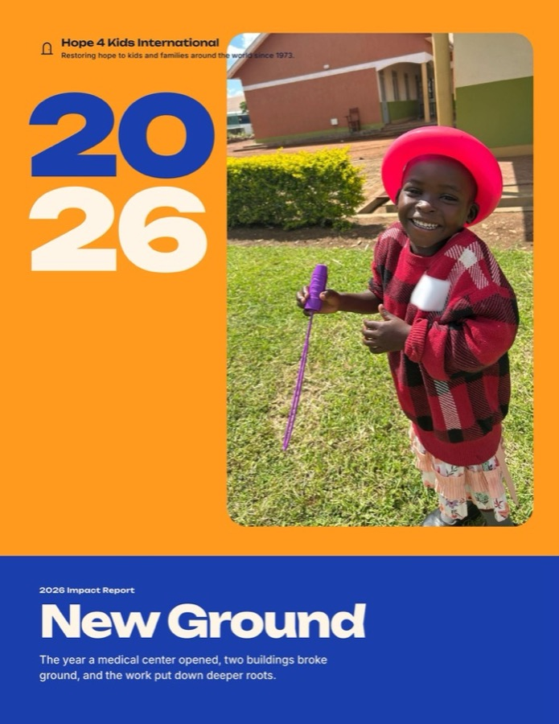
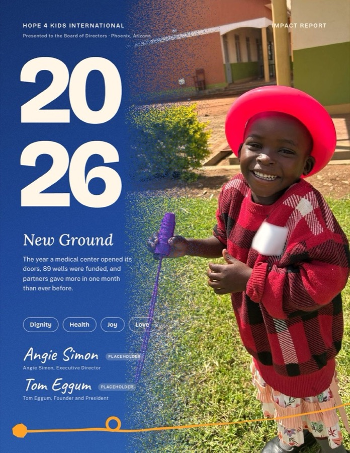

September 30 to October 5
Then we designed. Six times.
Each round kept what worked and fixed what bothered us about the one before.

1. Open Doors 2. Alongside
2. Alongside
3. New Ground
4. Number Posters
5. Faces
6. Two Speeds